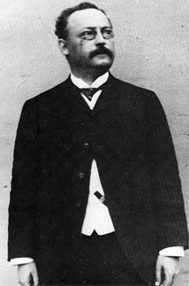
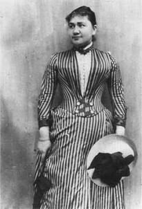
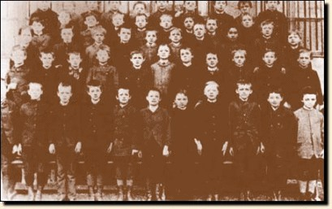
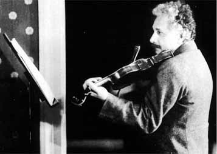

Albert Einstein sinh ngày 14-3-1879 tại Ulm, miền Wurtemberg, nước Đức. Cái tỉnh nhỏ bé này không mang lại cho Albert một kỷ niệm nào cả vì năm sau, gia đình Einstein đã di chuyển tới Munich. Sống tại nơi đây được một năm, một người em gái của Einstein ra chào đời và từ đó không có thêm tiếng trẻ thơ nữa. Chủ gia đình, ông Hermann Einstein là người lạc quan, tính tình vui vẻ. Còn bà mẹ, bà Pauline Koch, đã tỏ ra có óc thẩm mỹ ngoài bản tính cần cù, tế nhị. Bà hay khôi hài và yêu thích âm nhạc.
Vốn dòng dõi Do Thái nhưng gia đình Einstein lại sinh sống như người Đức vì tổ tiên của họ đã sinh cơ lập nghiệp tại nước Đức lâu đời. Các phong tục Do Thái cũ đều còn lại rất ít, trong khi tôn giáo bao giờ cũng là thứ mà họ giữ gìn. Vào các ngày lễ riêng của đạo Do Thái, nhóm dân này thường cử hành các buổi lễ theo nghi thức cổ truyền. Ngoài ra, cứ vào ngày thứ năm, gia đình Einstein thường mời một sinh viên Do Thái nghèo túng đến dùng cơm rồi cùng nhau nhắc nhở lại các điều răn trong Thánh Kinh


Cha Hermann, Mẹ Pauline Koch
Munich, thành phố mà Albert Einstein đã sống trong thời thơ ấu, là trung tâm chính trị và văn hóa của nước Đức tại miền nam. Ông Hermann đã mở tại thành phố này một cái xưởng nhỏ về điện cơ. Ông có một người em là kỹ sư điện nhiều kinh nghiệm, hai anh em cùng góp sức vào việc khai thác nguồn lợi: anh trông nom về mặt giao dịch buôn bán còn em cai quản phần kỹ thuật chuyên môn.
Từ ngày lọt lòng mẹ, cậu Albert chẳng có gì khác hơn những đứa trẻ thông thường. Cậu chậm biết nói đến nỗi lên 3 tuổi mà còn bập bẹ tiếng một khiến cho cha mẹ tưởng cậu bị câm. Hai ba năm sau, Albert vẫn còn là đứa trẻ ít nói, rút rát, thường lánh xa mọi đứa trẻ cùng phố. Cậu ít bạn và không ưa thích đồ chơi. Đoàn lính bằng chì của cha tặng cho cũng không làm cậu vui thích, điều này quả là khác thường bởi vì xứ sở này phải gọi là quê hương của những đoàn quân thiện chiến, của các tướng lãnh lừng danh như Bismarck, như Von Moltke. Cách giải trí mà cậu ưa thích là hát khe khẽ các bài thánh ca khi dạo mát một mình ngoài cánh đồng. Einstein đã sống trong tình thương của cha mẹ và bên cạnh người chú tài ba. Chính nhờ ông này mà Einstein có được các khái niệm đầu tiên về Toán Học.

Hình lớp học tại Munich năm 1889. Einstein đứng thứ hai, bên phải, hàng đầu. Câu chỉ giỏi toán và la tinh (Hình của Stadtarchiv, Ulm )
Thời bấy giờ tại nước Đức, các trường tiểu học không phải do chính phủ mở ra mà được các giáo hội phụ trách. Tuy theo đạo Do Thái nhưng ông Hermann lại cho con theo học một trường tiểu học Thiên Chúa giáo, có lẽ ông muốn con mình về sau này sinh sống như một đứa trẻ Đức. Einstein đã theo dần các lớp tiểu học mà không hề cảm thấy mình là một đứa trẻ khác đạo. Tại trường học, Albert Einstein không tỏ ra xuất sắc. Bản tính rút rát và ưa tư lự của cậu khiến cho các bạn thường chế riễu cậu là người mơ mộng.
Năm lên 10 tuổi, Albert Einstein rời trường tiểu học vào Gymnasium tức là trường trung học Đức. Việc học của các thiếu niên Đức từ 10 tới 18 tuổi đều do Gymnasium quyết định và cho phép lên Đại Học hay bước sang các ngành kỹ thuật. Tại bậc trung học, học sinh phải học rất nhiều về tiếng La-Tinh và Hy Lạp. Kỷ luật nhà trường rất nghiêm khắc, các giáo sư thường độc đoán và xa cách học sinh. Sống tại một nơi có nhiều điều bó buộc như vậy, Albert Einstein cảm thấy khó chịu. Có lần cậu nói: “ T ại bậc tiểu học, các thầy giáo đối với tôi như các ông Thượng Sĩ, còn tại bậc trung học, giáo sư là các ông Thiếu Úy ”. Sự so sánh này làm nhiều người liên tưởng tới đội quân của Vua Wilhelm II, với các ông Thượng Sĩ là những người thô tục và tàn bạo còn sĩ quan thường ưa thích uy quyền, lại tỏ ra bí mật và quan trọng.
Từ thuở nhỏ, Albert Einstein đã yêu thích học hỏi về Vật Lý. Cậu còn nhớ khi lên 5 tuổi, cha cậu cho cậu một chiếc địa bàn. Chiếc kim lúc nào cũng chỉ về một hướng làm cho cậu bé này thắc mắc, suy nghĩ. Lớn lên, Einstein ưa thích đọc các loại sách Khoa Học. Chàng sinh viên Do Thái tới ăn cơm vào ngày thứ năm đã khuyên Einstein đọc bộ sách “Khoa Học Phổ Thông” của Aaron Bernstein. Nhờ cuốn này mà Einstein hiểu biết thêm về Sinh Vật, Thực Vật, Vũ Trụ, Thời Tiết, Động Đất, Núi Lửa cùng nhiều hiện tượng thiên nhiên khác.
Về Toán Học, không phải nhà trường cho cậu các khái niệm đầu tiên mà là gia đình và ông chú ruột đã chỉ dạy cho cậu rõ ràng hơn các giáo sư tại Gymnasium. Nhà trường đã dùng phương pháp cổ điển, cứng rắn và khó hiểu bao nhiêu thì tại nhà, chú của cậu lại làm cho cách giải các bài toán trở nên vui thích, dễ dàng, nhờ cách dùng các thí dụ đơn giản và các ý tưởng mới lạ.

Năm 12 tuổi, Albert Einstein được tặng một cuốn sách về Hình Học. Cậu nghiền ngẫm cuốn sách đó và lấy làm thích thú về sự rõ ràng cùng các thí dụ cụ thể trong sách. Nhờ cuốn này, cậu học được cách lý luận phân minh và cách trình bày thứ tự của một bài tính. Do đó, cậu hơn hẳn các bạn về môn Toán. Vì được cha mẹ cho học đàn vĩ cầm từ khi lên 6 tuổi nên càng về sau, Einstein càng yêu thích âm nhạc và cảm thông được vẻ trong sáng và bay bướm trong các nhạc phẩm của Mozart. Năm 14 tuổi, Albert Einstein đã được dự vào các buổi trình diễn âm nhạc và nhờ vậy, cậu thấy mình còn kém về kỹ thuật vĩ cầm.
Đời sống tại nước Đức càng ngày càng khó khăn. Vào năm 1894, ông Hermann đành phải bán cửa hàng của mình rồi sang Milan, nước Ý, mở một cơ xưởng tương tự. Ông để con trai ở lại nước Đức theo nốt bậc trung học, vì chính nơi đây sẽ cho phép con ông bước lên bậc Đại Học. Vốn bản tính ưa thích Tự Do, Albert Einstein cảm thấy ngạt thở khi phải sống tại Gymnasium. Rồi quang cảnh ngoài đường phố nữa: vào mỗi buổi chiều, khi đoàn lính đi qua, tiếng trống quân hành đã kéo theo hàng trăm đứa trẻ. Các bà mẹ Đức thường bế con đứng xem đoàn thanh niên trong bộ quân phục diễn qua, và ước mơ của các thiếu nhi Đức là một ngày kia, chúng sẽ được đi đứng hiên ngang như các bậc đàn anh của chúng. Trái với sở thích chung kể trên, Albert Einstein lại rất ghét Quân Đội, rất ghét Chiến Tranh. Về sau này, có lần Einstein đã nói: “ Tôi hết sức kinh rẻ kẻ nào có thể vui sướng mà đi theo nhịp quân hành, nếu họ có một khối óc thì quả là nhầm lẫn rồi, một cái tủy xương sống là đủ cho họ ”.
Nền kỹ nghệ phát triển rất nhanh tại nước Đức đã khiến cho con người hầu như quên lãng thiên nhiên. Trái lại tại nước Ý, cảnh thiên nhiên rực rỡ và bầu trời trong sáng của miền Địa Trung Hải đã khiến cho Einstein tin tưởng đó là thiên đường nơi hạ giới. Vì sống trong cảnh cô đơn quá đau khổ nên nhiều lần Albert Einstein đã định bỏ trường học mà sang nước Ý sống với cha mẹ. Cuối cùng cậu tìm đến một y sĩ và xin giấy chứng nhận mình bị suy yếu thần kinh, cần phải tĩnh dưỡng tại nước Ý trong 6 tháng. Ông Hermann rất bực mình khi biết con bỏ dở việc học mà theo sang Milan. Albert lại cho cha biết ý định từ bỏ quốc tịch Đức bởi vì cậu đã chán ghét sự bó buộc của xứ sở đó. Nhưng cuộc sống tại Milan không phải dễ dàng. Ông Hermann cũng không quyết định cư ngụ tại nơi đây và việc xin cho Albert nhập quốc tịch Ý chưa chắc đã thành công trong một thời gian ngắn, như vậy Albert sẽ là một người không có tổ quốc. Ông Hermann khuyên con trai nên chờ đợi.
Thời gian sống tại nước Ý đối với Einstein thật là sung sướng. Cậu lang thang khắp các đường phố, đâu đâu cũng vang lên tiếng hát của người dân yêu thích âm nhạc. Cậu đi thăm rất nhiều viện bảo tàng, và các lâu đài tráng lệ với các tác phẩm nghệ thuật đã làm cho mọi người phải say sưa, lưu luyến. Phong cảnh của nước Ý thực là hữu tình nên đã khiến cho con người yêu mến thiên nhiên. Người dân tại nơi đây không làm việc như một cái máy, không sợ quyền hành, không bị ràng buộc vào các điều lệ nhân tạo gò bó mà trái lại, tất cả mọi người đều cởi mở, vui vẻ và hồn nhiên.
Tại Milan, nghề điện đã không giúp được cho gia đình Einstein sung túc. Ông Hermann phải bảo con trai đi kiếm một việc làm nuôi thân. Albert tính rằng để có thể tiếp tục sự học, điều hay nhất là cậu xin vào một trường nào cấp học bổng. Vì không tốt nghiệp từ Gymnasium, Albert không thể nào xin lên đại học được, vả lại cậu khá về toán học nên một trường kỹ thuật sẽ hợp với cậu hơn.